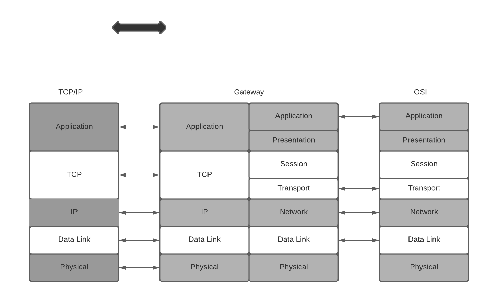
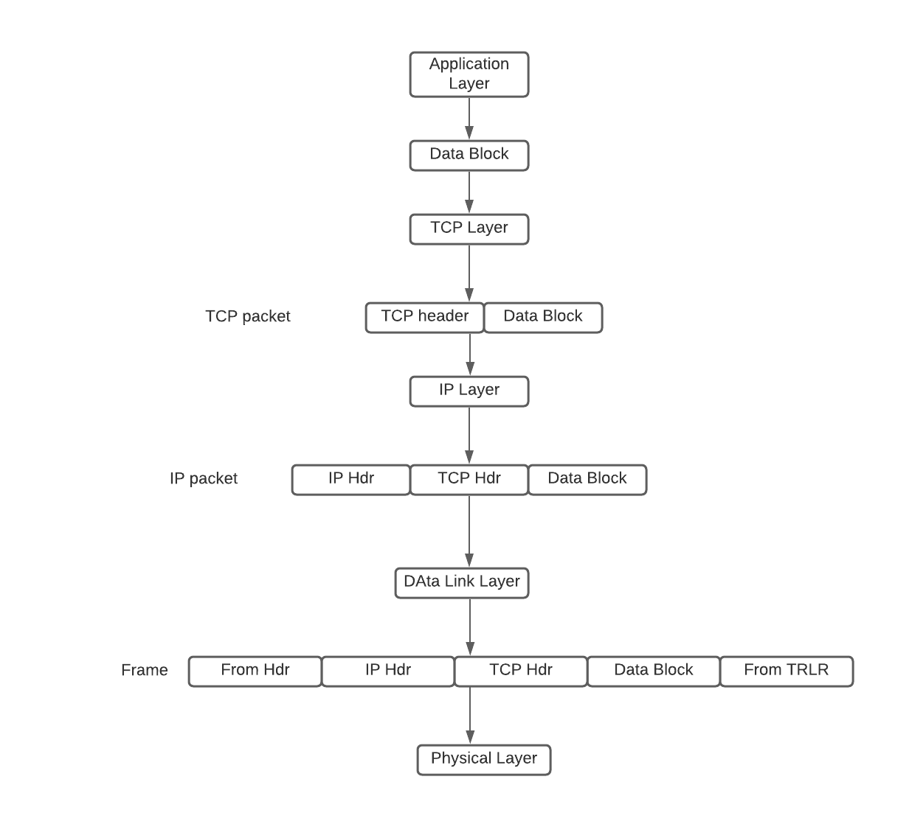
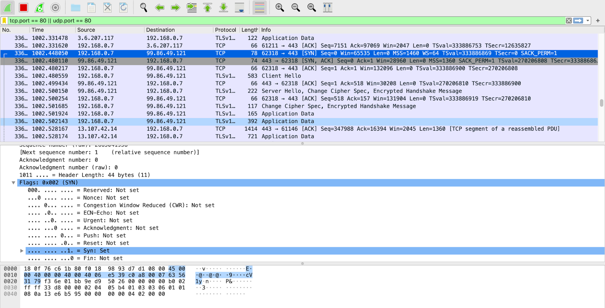
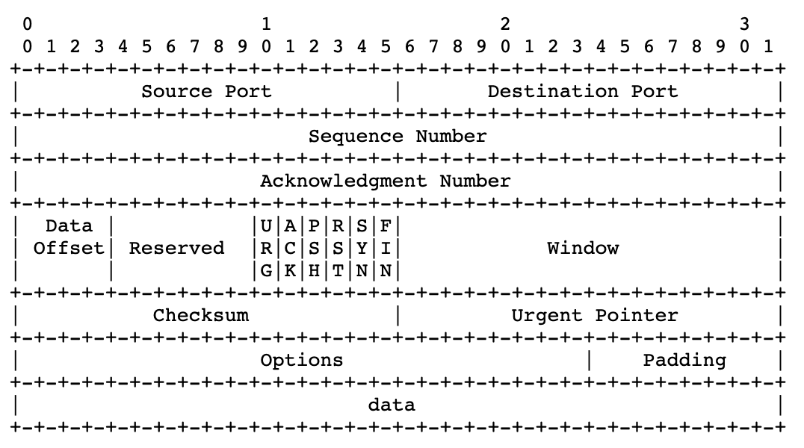
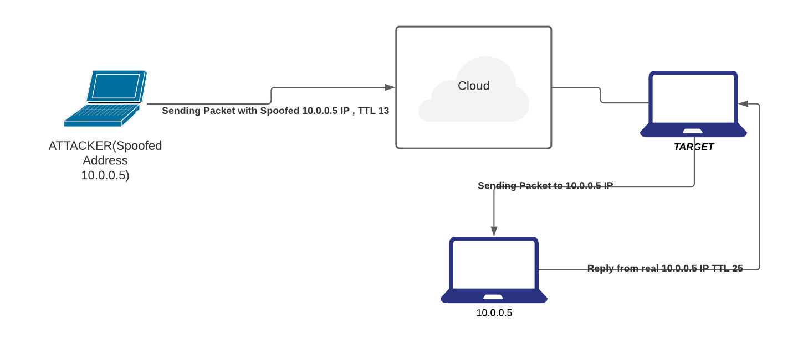
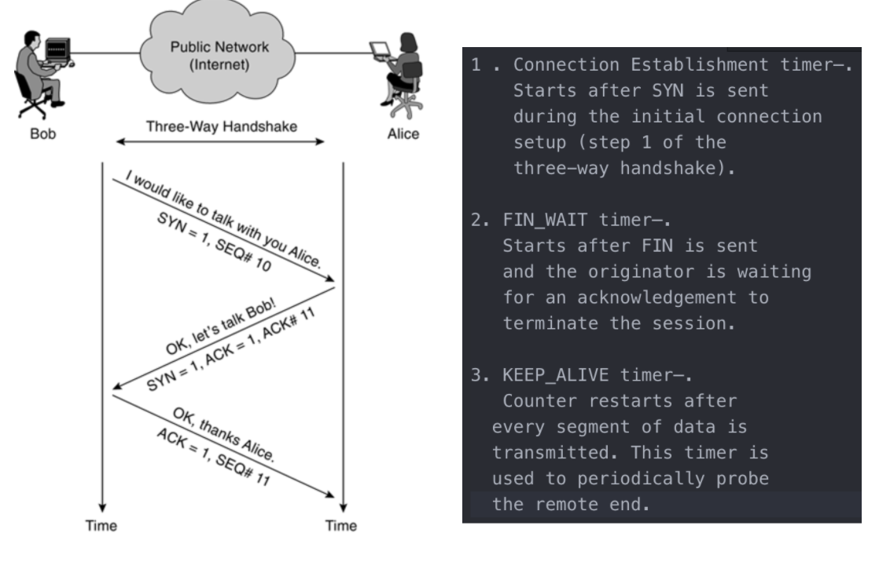
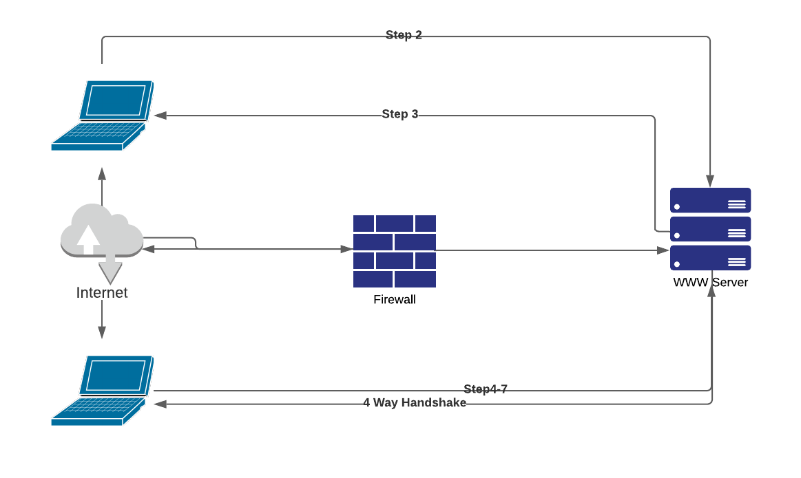

第二部分：網路安全
簡介
- TCP/IP 是當今主流的網路技術，它是一種五層架構。這些層級從上到下為：應用層、傳輸層（TCP）、網路層（IP）、資料連結層以及實體層。除了 TCP/IP，還有其他的網路技術。為了方便起見，我們使用 OSI 網路模型來代表非 TCP/IP 的網路技術。不同的網路之間是透過閘道（gateway）互連的，閘道可以放置於任何層級。
-
OSI 模型是七層架構。OSI 架構與 TCP/IP 架構相似，但 OSI 模型在 TCP/IP 架構的應用層與傳輸層之間，額外規定了兩層：表示層與會話層。圖 5.1 顯示了 TCP/IP 層與 OSI 層的對應關係。TCP/IP 的應用層對應 OSI 的應用層與表示層；TCP/IP 的傳輸層對應 OSI 的會話層與傳輸層；而 TCP/IP 架構中的另外三層與 OSI 模型中的三層是一一對應的。

TCP/IP 架構層與 OSI 模型層的對應關係。圖中亦顯示了密碼演算法置放於網路層級的位置，虛線箭頭 表示密碼演算法的實際通訊方向。
OSI 各層功能簡述如下：
- 應用層：作為應用程式與網路程式的介面，支援應用程式和最終使用者處理。常見的應用層程式包括遠端登入、檔案傳輸、電子郵件與網頁瀏覽。
- 表示層：負責處理不同資料形態的問題。此協定層使得位於通訊通道雙側的應用程式，即使使用不同平台，也能互相理解資料格式，而無須關注資料的呈現方式。
- 會話層：負責通訊連線的建立、管理及關閉。
- 傳輸層：提供可靠連線，如封包排序、流量控制與擁塞控制。
- 網路層：負責路由與裝置無關的資料封包，從當前跳點傳送至下一跳。
- 資料連結層：將裝置無關的資料封包封裝至裝置相關的資料框架中，分為邏輯鏈路控制（LLC）與媒體存取控制（MAC）兩個子層。
-
實體層：負責通訊媒介上裝置相關的框架傳輸。
-
從應用層開始，應用程式產生的資料會逐層往下傳遞至實體層。前一層的資料會被當前層再包覆成新的封套（類似以小信封裝入大信封），且每層新增的封套中包含足夠資訊以處理該封包。應用層資料會被劃分為足夠小的區塊，以方便下一層封裝。
-
在 TCP/IP 架構中，應用資料區塊的封裝過程如下：在傳送端，當資料往 TCP 層傳遞時，會被封裝成 TCP 封包（包含標頭與資料部分），TCP 封包再向下傳遞至 IP 層時，被封裝進 IP 封包；IP 封包則被封裝進裝置相關的資料框架（如 Ethernet 框架），框架有標頭，且可能有尾端檢查資料（如 Ethernet 框架有 32 位元 CRC）。最後資料在實體層轉換成媒體訊號進行傳輸。

封包產生流程圖 -
在接收端，實體層將媒體訊號轉換成框架，框架傳遞至資料連結層，資料連結層提取框架內的 IP 封包傳給 IP 層，IP 層將封包內的 TCP 封包傳給 TCP 層，最後 TCP 層將資料區塊交給應用層。當封包抵達路由器時，只會上傳至 IP 層，並修改 IP 標頭中的某些欄位（如將 TTL 減 1），接著該封包再按層級向下傳輸至物理層繼續轉發。
公鑰基礎設施（PKI）
- 為了在網路應用中部署密碼演算法，我們需透過公開網路分發秘密金鑰。公開金鑰密碼學是分發此類秘密金鑰的最佳方法。使用公開金鑰密碼學需建立公鑰基礎設施（PKI），以支援與管理公鑰憑證和憑證授權中心（CA）網路。PKI 主要執行以下功能：
- 在發放公鑰憑證前驗證使用者合法性。
- 依使用者請求發放公鑰憑證。
- 依使用者請求延長公鑰憑證有效期間。
- 於使用者要求或私鑰外洩時撤銷公鑰憑證。
- 儲存及管理公鑰憑證。
- 防止數位簽章使用者否認其簽署。
- 支援 CA 網路，讓不同的 CA 可認證彼此發出的公鑰憑證。
- X.509 規範詳見：https://certificatedecoder.dev/?gclid=EAIaIQobChMI0M731O6G6gIVVSQrCh04bQaAEAAYASAAEgKRkPD_BwE
IPsec：網路層安全協定
- IPsec 是網路層的重要安全協定。
- IPsec 為建立虛擬私人網路（VPN）的強大平台，VPN 是建構於公共網路上的私有網路。
- 在網路層部署密碼演算法的目的是加密或驗證 IP 封包（僅針對有效負載或整個封包）。
- IPsec 同時定義密鑰交換方式，因此包含驗證協定、加密協定與密鑰交換協定，分別稱為驗證標頭（AH）、封裝安全負載（ESP）與網際網路密鑰交換（IKE）。
PGP 與 S/MIME：電子郵件安全
- 應用層有多種安全協定，最廣泛使用的為電子郵件安全協定：PGP 與 S/MIME。
- SMTP（簡單郵件傳輸協定）用於客戶端到伺服器的傳送與遞送，使用連接埠 25，為外寄伺服器。相反地，POP（郵局協定）允許用戶接收郵件並下載至收件匣，是收信伺服器。最新版本為 POP3，自 1996 年起使用，使用連接埠 110。
PGP
- PGP 實現了所有主要的加密演算法、ZIP 壓縮演算法及 Base64 編碼演算法。
- 它能用於訊息驗證、加密或兩者並行。PGP 通常依序執行：驗證、ZIP 壓縮、加密與 Base64 編碼。
- Base64 編碼使訊息準備好用於 SMTP 傳送。
GPG（GnuPG）
- GnuPG 是另一種基於 OpenPGP 的免費加密標準，供企業使用。
- 它可視為 Symantec PGP 的替代品。
- 主要差異在於支援的演算法，但 GnuPG 設計上與 PGP 兼容。由於 GnuPG 是開放原始碼，部分企業偏好 Symantec PGP 提供的技術支援與使用者介面。
- 注意 GnuPG 與 PGP 在某些演算法上存在兼容性差異，例如 IDEA 模組因專利問題未隨 GnuPG 預設提供，但在多數應用（如電子郵件）可透過變通達成。
S/MIME
- SMTP 僅能處理 7-bit ASCII 文本訊息（可用 UTF-8 擴充以減輕此限制）。POP 可處理除 7-bit ASCII 以外的內容，但通常設定會將郵件全部下載至用戶端並從伺服器刪除，不利用戶於多台電腦存取郵件。
- 多功能網際網路郵件擴充協定（MIME）設計用於支援多種格式郵件傳送，包括非文字處理檔案、圖形檔、音效檔及影片片段，且可混合多種格式於單一郵件中。
- 網際網路郵件存取協定（IMAP）運作於 TCP 143 端口（僅非加密），郵件持續保存於伺服器，直至用戶刪除，使多台機器能同步讀取郵件並下載而不刪除伺服器上的副本。
SSL/TLS
- SSL 使用 PKI 判斷伺服器的公開金鑰是否值得信賴，要求伺服器使用可信 CA 簽發的安全憑證。
- Netscape Navigator 1.0 發布時，僅信任 RSA Data Security 公司經營的單一 CA。
- 伺服器的 RSA 公開金鑰存於安全憑證中，瀏覽器用以建立安全通訊通道。今日使用的憑證仍遵循同一標準（X.509）。
- Netscape 打算讓使用者辨識安全與不安全的連線狀態，因此在網址欄旁放置鎖頭符號，以視覺化指示安全性。開鎖為不安全，鏽鎖為 SSL 保護，這標誌已成為所有瀏覽器的標準。
-
SSL 2.0 首版後一年推出 SSL 3.0，該協定在 2015 年 6 月被正式廢止，但全球仍廣泛使用。IETF 制定出略有修改的 SSL 3.0，並於 1999 年發布為 TLS 1.0。SSL 與 TLS 名稱的混用至今仍常見，官方上 TLS 是新版 SSL，但實務上 SSL、TLS 常被當作任何版本的協定名稱。
-
必看資源：
網路邊界安全
讓我們看看如何維持周界（perimeter），即邊緣與第一道防線的防護。
一般防火牆架構
- 防火牆是必要的，因為密碼演算法無法有效阻止惡意封包進入邊緣網路。
- IP 封包不論是否加密，都能被轉發至邊緣網路。
- 1990 年代興起的防火牆是限制網路存取的重要工具。防火牆可為硬體裝置、軟體套件或兩者結合。
- 來自外部進入內部網路的封包需先檢查，防火牆的關鍵能力之一是能在不降低通訊速度的前提下，檢視封包，保護內部網路安全。
- 防火牆的封包檢查方法多種，依方式可分為封包過濾器、電路閘道器、應用程式閘道器和動態封包過濾。
封包過濾器
- 檢查從外部進入內部網路的進入封包及從內部出外的外發封包。
- 僅檢查 IP 頭和 TCP 頭，不檢查應用層產生的負載。
- 使用一組規則判斷封包是否允許通過。
- 分為兩種：
- 無狀態（Stateless）
- 將每個封包視為獨立物件，不記錄先前處理過的封包，根據單一封包決定是否放行。
- 有狀態（Stateful）
- 又稱連線狀態過濾，追蹤內部主機和外部主機間連線狀態（TCP 或 UDP 連線及是否已建立）。
- 無狀態（Stateless）
電路閘道器
- 又稱電路層閘道器，通常運作於傳輸層。
- 依據 TCP（或 UDP）標頭內的 IP 地址和埠號資訊，判斷是否允許內部主機與外部主機建立連線。
- 常和封包過濾器結合以組成動態封包過濾器。
應用程式閘道器（ALG）
- 也稱代理伺服器（PROXY Server）
- 作為內部主機的代理，處理來自外部客戶端的服務請求。
- 深入檢查每個 IP 封包（進入或外出）。
- 特別檢查封包中應用程式格式（如 MIME、SQL）及負載是否被允許。
- 因此，有能力偵測封包負載內的電腦病毒、惡意程式碼並隔離可疑封包，並封鎖可疑 IP 或 TCP 埠。但同時帶來較大計算與記憶體負擔。
可信系統與堡壘主機
- 可信作業系統（Trusted Operating System, TOS）符合特定安全需求。判斷作業系統是否可信，須評估：
- 系統設計無缺陷；
- 系統軟體無漏洞；
- 系統設定合宜；
-
系統管理適當。
-
堡壘主機
- 堡壘主機具備強健防禦機制，常作為應用程式閘道器、電路閘道器或其它防火牆類型的主機。堡壘主機運行於可信作業系統，系統無多餘功能與程式，降低錯誤可能並便於安全檢測。僅安裝必要的網路應用程式，如 SSH、DNS、SMTP 及認證程式。
- 屬於受控進入點，安全監控可集中於單一位置。
常用技術與掃描、封包擷取
使用 Nmap 掃描埠口
- Nmap（Network Mapper）是一款免費且開放源碼的網路探索與安全稽核工具，系統與網管員常用於網路盤點、服務更新管理與主機/服務運作時間監控。
- 優點是免費、開放且功能多元。
- 用途包含辨識網路中活動主機、該主機開啟的埠口、埠口運行的服務及服務版本識別。
- 詳情參見 http://scanme.nmap.org/。
nmap [掃描類型] [選項] [目標規格]
Nmap 使用 6 種埠口狀態：
- 開啟（Open） — 主動接受 TCP、UDP 或 SCTP 連線的埠。開啟埠是攻擊者的目標，也是網路服務存在的證明。
- 關閉（Closed） — 回應 Nmap 偵查封包但無應用程式監聽的埠，有助於確認主機存在與作業系統識別。
- 過濾（Filtered） — 無法判斷埠是否開啟，因封包過濾器阻止偵查封包達該埠，多由防火牆或路由器規則造成，偵查資料通常有限。
- 未過濾（Unfiltered） — 埠可存取但不清楚是否開啟，僅用於 ACK 掃描判斷過濾狀況，其他掃描可判別開啟狀態。
- 開啟/過濾（Open/filtered） — 未能判定是否開啟或過濾，通常因開啟埠無回應，可能封包遭丟棄或回應被阻擋。
- 關閉/過濾（Closed/filtered） — 無法鑑定埠口是關閉或過濾，在 IP ID 空閒掃描中使用。
Nmap 掃描類型：
- TCP 全連接掃描（TCP Connect）
- 完成三向交握。
- 若埠開啟，OS 完成連線後掃描器關閉以避免 DOS，屬「有聲」掃描，服務端可記錄來源 IP，可能觸發入侵偵測系統。
- UDP 掃描
- 檢查 UDP 埠是否有監聽。
- UDP 不像 TCP 回應正向確認，只有在埠關閉時才回覆。
- SYN 掃描
- 另一種 TCP 掃描，又稱半開掃描，未完成整個 TCP 連線。
- 掃描器送 SYN 封包，若回應 SYN-ACK 表示開啟，掃描器回 RST 封包關閉連線。
- 若埠關閉，目標回 RST 封包。避免服務端收到完整連線請求。
- FIN 掃描
- 隱蔽型掃描，類似 SYN 掃描，但送 FIN 封包。
- ACK 掃描
- 判斷埠是否被過濾。
- NULL 掃描
- 非常隱蔽，設置所有 TCP 標誌位關閉。封包非正常，部分主機不知如何處理。
- XMAS 掃描
- 類似 NULL，所有 TCP 標誌位設為開啟。
- RPC 掃描
- 尋找提供遠端程序調用（RPC）服務的裝置。
- IDLE 掃描
- 超隱蔽方法，利用對外第三方（喪屍主機）轉發掃描封包。不需控制第三方，但需先行設定。較常用於惡意攻擊。
掃描技術詳見 https://medium.com/infosec-adventures/nmap-cheatsheet-a423fcdda0ca。
OpenVAS
- OpenVAS 為完整漏洞掃描器。
- 為服務和工具框架，提供強大漏洞掃描與管理功能。
- OpenVAS 是基於 Nessus 漏洞掃描程式的開源衍生版本。
- 組成三部分：經常更新的網路漏洞測試（NVT）、執行掃描的掃描器，以及使用 SQLite 3 資料庫儲存測試設定與結果。
- 詳情：https://www.greenbone.net/en/install_use_gce/
Wireshark
- Wireshark 是協定分析器。
- 設計用以解碼封包內容及協定間關係，理解協定序列。
Wireshark 範例：
- 只擷取 UDP 封包：
Capture filter = "udp" -
只擷取 TCP 封包：
Capture filter = "tcp" -
TCP/IP 三向交握示意：
 -
以 IP 過濾：顯示來源或目的為該 IP 的封包
ip.addr == 192.168.1.1 -
以來源 IP 過濾：
ip.src == 192.168.0.1 -
以目的 IP 過濾：
ip.dst == 192.168.0.1 -
以子網過濾：來源或目的為子網的流量
ip.addr = 192.168.0.1/24 -
以協定過濾：
dns, http, ftp, arp, ssh, telnet, icmp 等 -
排除特定 IP：
!ip.addr ==192.168.0.1 -
兩子網間流量：
ip.addr == 192.168.0.1/24 and ip.addr == 192.168.1.1/24 -
兩工作站間流量：
ip.addr == 192.168.0.1 and ip.addr == 192.168.0.2 -
MAC 過濾：
eth.addr = 00:50:7f:c5:b6:78 -
TCP 埠過濾：
tcp.port == 80 -
TCP 埠來源過濾：
tcp.srcport == 80 -
TCP 埠目的過濾：
tcp.dstport == 80 -
搜尋使用者代理：
http.user_agent contains Firefox
排除條件：!http.user_agent contains || !http.user_agent contains Chrome -
過濾廣播流量：
!(arp or icmp or dns) -
IP 與埠同時過濾：
tcp.port == 80 && ip.addr == 192.168.0.1 -
過濾 HTTP GET 請求：
http.request -
過濾所有 HTTP GET 請求及回應：
http.request or http.response -
過濾三向交握封包：
tcp.flags.syn==1 or (tcp.seq==1 and tcp.ack==1 and tcp.len==0 and tcp.analysis.initial_rtt) -
依檔案類型搜尋：
frame contains “(attachment|tar|exe|zip|pdf)” -
依關鍵字搜尋流量：
tcp contains facebook
frame contains facebook -
偵測 SYN 洪泛：
tcp.flags.syn == 1 and tcp.flags.ack == 0
Wireshark 混雜模式
- 預設 Wireshark 只擷取發往及來源是本機的封包。啟用擷取設定中的混雜模式，可擷取 LAN 中的大部分流量。
Dumpcap
- Dumpcap 是網路流量擷取工具，能擷取封包並寫至檔案，預設格式是
pcapng（Wireshark 的擷取格式）。 - 預設擷取第一可用網路介面，用
pcap函式庫擷取封包與時間戳記。 - 支援長時間擷取並備有過濾條件。
- 可由 Wireshark 指令行工具
dumpcap.exe使用。
DaemonLogger
- DaemonLogger 是專為網路與系統管理環境設計的封包記錄應用程式。
- 優點是操作簡便，指定介面即可開始擷取並持續記錄。
- 擷取滿 2 GB 後自動建立新檔，直到程式停止。
netsniff-ng
- netsniff-ng 是高效能封包擷取工具。
- 不同於其他工具依賴
libpcap，netsniff-ng 利用零複製機制（zero-copy）擷取封包，適合高流量連結。 - 擷取指令範例：
netsniff-ng –i eth1 –o data.pcap
NetFlow
- NetFlow 是 Cisco 於 1996 年引入的功能，可收集進出介面的 IP 流量資料。透過分析，網管能瞭解頻寬來源、目的、分類和擁塞成因。
- NetFlow 架構包括三要素：
- 流量匯出器：將封包彙整成流量資料，送至匯出收集器。
- 流量收集器：接收、儲存並預處理流量資料。
- 分析應用程式：針對入侵偵測或流量標定等目的分析資料。
- 支援 NetFlow 的路由器及交換器可針對啟用介面收集 IP 流量統計，並送出 NetFlow 記錄，通常送至專用分析伺服器。
入侵偵測系統（IDS）
- IDS 能偵測環境中的安全事件，但不阻擋事件。
- IDS 感測器可為軟體或硬體，用於收集並分析網路流量。類型分為網路型 IDS 和主機型 IDS。
- 主機型 IDS 為安裝於伺服器的代理，以低資源監控作業系統。
- 網路型 IDS 可嵌入網路設備、獨立裝置或模組，監控網路流量。
基於特徵的 IDS
- 監控流量，若偵測到已知惡意事件即發警報。
- 藉由與已知攻擊模式資料庫比對資料流而達成。
- 這些特徵明確定義哪些流量或行為視為惡意。
- 特徵式偵測十多年來一直是網路防禦主幹，類似主機端的防毒方式。
- 流程為：分析師觀察惡意活動，提取指標並製成特徵，當活動重演即觸發警報。
- 範例：SNORT、SURICATA。
基於政策的 IDS
- 主要是主機型 IDS，在違反設定的安全政策時發警報。
- 政策代表允許及禁止行為。
- 靈活且可客製化，明確定義允許的行為。
- 相較之下，特徵式系統依賴廠商預設與資料庫。
基於異常的 IDS
- 偵測異常流量偏離正常模式的情況，但難以界定「正常」流量。
- 有兩種方法：統計式及非統計式異常偵測。
- 統計式透過長時間學習流量模式。
- 非統計式則依預設接受的流量模式。
主機型 IDS 與網路型 IDS
- 主機型 IDS 係分散式代理，部署於須保護之每台伺服器，密切結合作業系統。
- 網路型 IDS 則為智慧封包監控裝置，從網路擷取資料，與主機型 IDS 從主機擷取資料不同。
蜜罐（Honeypots）
- 使用誘餌主機吸引入侵者注意，避免攻擊真正目標，是防入侵重要技巧。
- 蜜罐可為實體設備或模擬系統，於區域網路或檔案系統設置具有漏洞的偽裝目標，誘使攻擊者攻擊，保護真正資產。
- 可包含主機、伺服器、路由器及整個誘餌 LAN。
漏洞（TCP/IP 安全問題）

IP 欺騙（IP Spoofing）
- 攻擊者替換封包中來源 IP 位址，或少見地替換目的 IP 位址。
- 欺騙通常用於針對目標主機發動攻擊，或觸發阻斷服務（DoS）。
- 在 DoS 攻擊中，攻擊者修改 IP 封包，使目標主機誤認封包來自受信任主機。攻擊者須知信任主機 IP，以正確修改封包標頭（來源 IP）。
IP 欺騙偵測技術
- 直接 TTL 探測
- 送封包至疑似欺騙 IP 主機並觸發回應，比較回應 TTL 與疑似封包 TTL，不同則為欺騙封包。此法在攻擊者與受害者位於不同子網時有效。

- 送封包至疑似欺騙 IP 主機並觸發回應，比較回應 TTL 與疑似封包 TTL，不同則為欺騙封包。此法在攻擊者與受害者位於不同子網時有效。
- IP 識別號比對
- 送探測封包至疑似欺騙主機並觸發回應，比對 IP ID 是否接近封包值，不符即為欺騙。
- TCP 流量控制法
- 欺騙者無法接收目標的 SYN-ACK 回應，因而不會回應擁塞視窗調整。若接收端流量持續，超過視窗容量，可能為欺騙。
隱密通道（Covert Channel）
- 指非法利用系統之溝通管道，在未符合安全規範的情況下傳送資訊。
-
TCP/IP 中可利用部分協定建立隱密通道秘密傳輸資料。
- 例如 ICMP 協定，Internet 層的ICMP Echo Request有固定 8 字節標頭與 56 字節有效負載，按規範有效負載不該包含資料，但攻擊者會修改封包以攜帶秘密資料，使封包大小增加，且協定棧無控制機制阻止此行為。攻擊者以此建立客戶端-伺服器程式竊取機密，無法輕易警示系統管理員。
-
ICMP 通道亦可用於其他場合，如 1996 年 Loki C&C 工具用 ICMP 建立加密互動會話。
-
目前許多 IDS/IPS 已可偵測 ICMP 隧道。
- 檢查 Echo 回應與請求是否負載相符。
- 監控 ICMP 流量量級是否超過可接受閾值。
IP 分段攻擊（IP Fragmentation Attack）
- TCP/IP（特別是 IP）協定允許封包分段，利用分段偏移欄位追蹤不同片段。
- 目的端依偏移欄位將分段重組。
- 各片段擁有相同識別欄位值，偏移欄位標示片段在原始封包中的位置。
- 多數路由器與防火牆不負責分組重組。正常分段互不重疊，但攻擊者可製造人為重疊的分段，誤導路由器與防火牆。
- 封包通常尺寸小且效率低，對端也難處理。
- 舉例：Ping of Death（PoD）攻擊，以過大重組封包造成目標系統崩潰。
TCP 標誌位
- TCP 資料交換須三向交握完成，過程中使用多種標誌位影響封包處理。
- TCP 標頭中有 6 位標誌，分別是：緊急指標（URG）、確認（ACK）、推送（PSH）、重設連線（RST）、同步序列號（SYN）與連線結束（FIN）。
 - 濫用或非法組合這些標誌可用於 DoS 攻擊，造成伺服器或網站崩潰。
| SYN | FIN | PSH | RST | 合法性 |
|------|------|-------|------|-------------|
| 1 | 1 | 0 | 0 | 非法組合 |
| 1 | 1 | 1 | 0 | 非法組合 |
| 1 | 1 | 0 | 1 | 非法組合 |
| 1 | 1 | 1 | 1 | 非法組合 |
- 攻擊者會編寫特製程式，產生上述非法組合，實現有效的 DoS 攻擊。
SYN 淹洪
- 三向交握中等待限制問題被攻擊者利用導致服務癱瘓。
- 攻擊者發起大量連線請求（通常用偽造的 IP）。
- 目標伺服器送出 SYN+ACK 回應，但未收到確認，造成半開連線累積。
- 伺服器有最大併發連線數限制，導致無法再接受新連線請求。
FIN 攻擊
- 正常工作時發送 FIN 表示結束連線，並需彼此確認。
- 攻擊時為偽造含正確序列號的 FIN 封包，使目標主機認作有效請求。
- 這種序號預測攻擊利用了 TCP 序號可偵測性，導致連線崩潰。
連線劫持（Connection Hijacking）

- 授權使用者（員工 X）透過 TCP 會話向網站伺服器發送 HTTP 請求。
- 伺服器接受封包需符合正確 SEQ/ACK 序號以區分會話，保證到訊息完整性。
- 攻擊者偽造員工 IP，利用正確 SEQ/ACK 組合將封包送往伺服器，造成伺服器將攻擊者認定為員工，並忽略真實員工的封包。最終攻擊者接管連線，員工被迫斷線。
步驟：
- 攻擊者使用網路監控工具觀察員工 X 與網站間流量。
- 伺服器會回應員工 X。
- 員工 X 回應確認封包。
- 攻擊者發出偽造封包到伺服器。
- 伺服器回應攻擊者，攻擊者根據回應調整 SEQ/ACK，成功接管會話，導致員工會話中斷。
- 攻擊者繼續與伺服器通訊。
- 伺服器回應以確認資料送達。
- 攻擊者維持會話流並在適當時機發送 FIN 結束會話。
緩衝區溢位（Buffer Overflow）
- 緩衝區是用來暫存程式碼與資料的記憶體區域。
- 當程式試圖寫入超過緩衝區容量的資料時，會發生溢位。
- 溢位會讓額外資料覆寫鄰近有效資料，造成不良影響。
機制：
- 緩衝區溢位有多種型態，最終目標為控制特權程式，甚至主機。攻擊需：
- 讓惡意程式碼出現於程式碼位址空間。
- 使程式流程跳轉執行惡意程式，並載入合適參數。
- 第一任務可透過注入惡意程式到目標空間或利用現有程式碼並微調參數達成。
- 第二任務較複雜，需修改程式控制流程。
對策：
- 最重要的是編碼正確無誤。
- 另一法是將資料緩衝區設為不可執行地址空間，防止惡意程式碼執行。
更多欺騙技術
位址解析協定欺騙（ARP Spoofing）
- ARP 用於將已知 IP 地址對應至 MAC 地址。
- 攻擊者通過偽造 Host B 的 MAC 位址，使本地網路中的任意設備誤信攻擊者為受信任的 Host B。在交換器環境下此方法常見。
- 防範方法包括設置靜態 ARP 表格於所有主機與路由器，或使用 ARP 伺服器替目標主機回應 ARP 請求。
DNS 欺騙（DNS Spoofing）
- 攻擊者使目標機器誤以為欲連線的系統為攻擊者主機。
- 透過修改 DNS 記錄，將主機名稱對應到攻擊者的 IP 地址。已有整個 DNS 伺服器遭複寫的案例。
- 防範 DNS 欺騙可透過反向查詢（Reverse Lookup）來驗證 IP 與名稱。IP 與名稱通常分別存放於不同伺服器，難以同時被攻破。